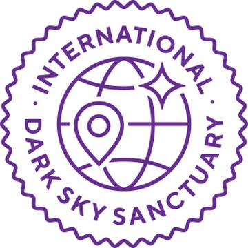
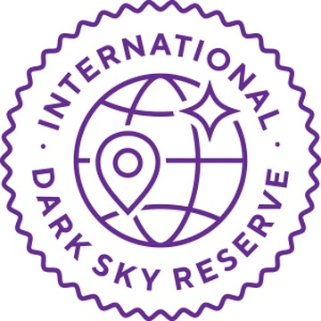
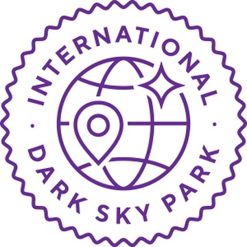
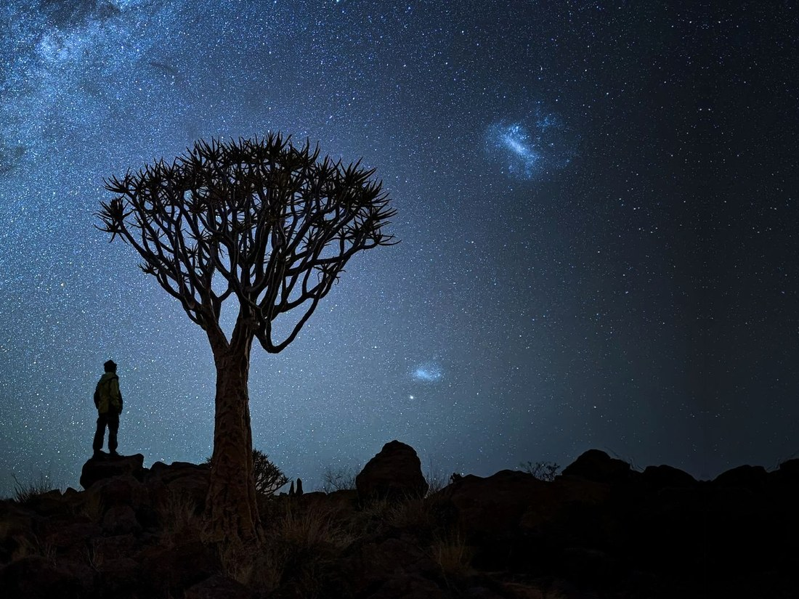
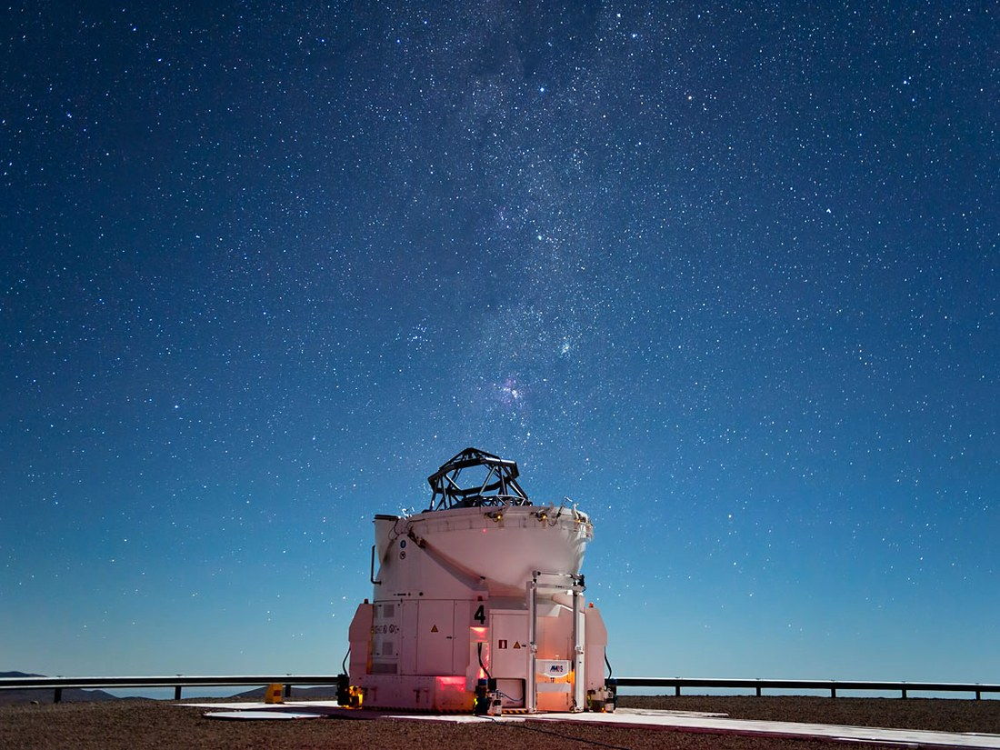

Sanctuary
暗夜保护区
位置偏远、物理上难以到达的区域，夜空质量极高，受到的威胁最小。数量最少，也最严格。
国际暗夜协会（International Dark-Sky Association，简称 IDA，现用名 DarkSky International）成立于 1988 年，是目前全球最主要的光污染治理与暗夜保护组织，总部位于美国亚利桑那州图森市。
它的工作可以概括为三件事：推动照明政策的改变、认证并保护暗夜地点、向公众解释光污染是什么。
IDA 不是政府机构，也没有执法权。它的影响力来自两方面：一是它制定的照明原则被越来越多的国家和地区采纳为规范；二是它的认证体系为「什么样的夜空值得保护」提供了一套可操作的判据。
截至目前，DarkSky International 的公开数据包括：
最早的一处认证发生在 2001 年，美国亚利桑那州的弗拉格斯塔夫（Flagstaff）被命名为第一个国际暗夜城市。这座城市早在 1958 年就通过了限制夜间照明的条例，是世界上最早的同类法规。

这是 IDA 最广为人知的项目。它不评价某个地方「星空好不好看」，而是审查三件事：照明管理是否有制度保障、夜空质量是否有实测数据支持、是否开展了公众教育与对外推广。
通过审查的地点会获得认证，有效期通常为若干年，到期需重新申请。目前分为五种类型。

位置偏远、物理上难以到达的区域，夜空质量极高，受到的威胁最小。数量最少，也最严格。

由一片黑暗的「核心区」和周边有人居住的「缓冲区」组成。保护核心区的不是地理位置，而是有约束力的照明政策。

公有或私有的保护地，具备良好的户外照明并开展暗夜科普项目。是公众最容易接触到的一类。

另外两类不单独设徽章，但同样属于 IDSP 体系：
最后一类对本站的研究具有直接参照意义：它说明 IDA 认可「城市内部也可以有值得保护的暗夜资源」这一命题。
除了保护地点，IDA 还认证产品与设计。这是面向照明行业的一条线，目的在于从源头减少不合格的灯具进入市场。
主要类别包括：
这套认证的意义在于：它把「什么样的灯算合格」从主观判断变成了可查询、可对照的清单。一个城市要做照明改造，不必从零开始讨论标准，可以直接参照这份清单。
本站研究的目标是杭州城市范围内的暗夜资源。这一目标与 IDSP 的任何一类都不完全对应——杭州不可能成为 Sanctuary 或 Reserve，而 Urban Night Sky Place 的认证门槛与程序，对一份中学生研究而言也不现实。
但 IDA 的框架仍然提供了三样可直接使用的东西：
本站的工作是在这套框架下，针对杭州的具体条件做一次落地的尝试。
